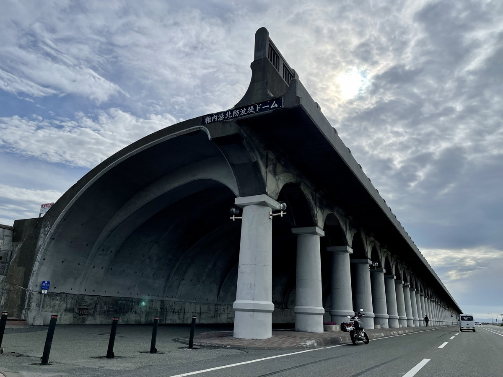
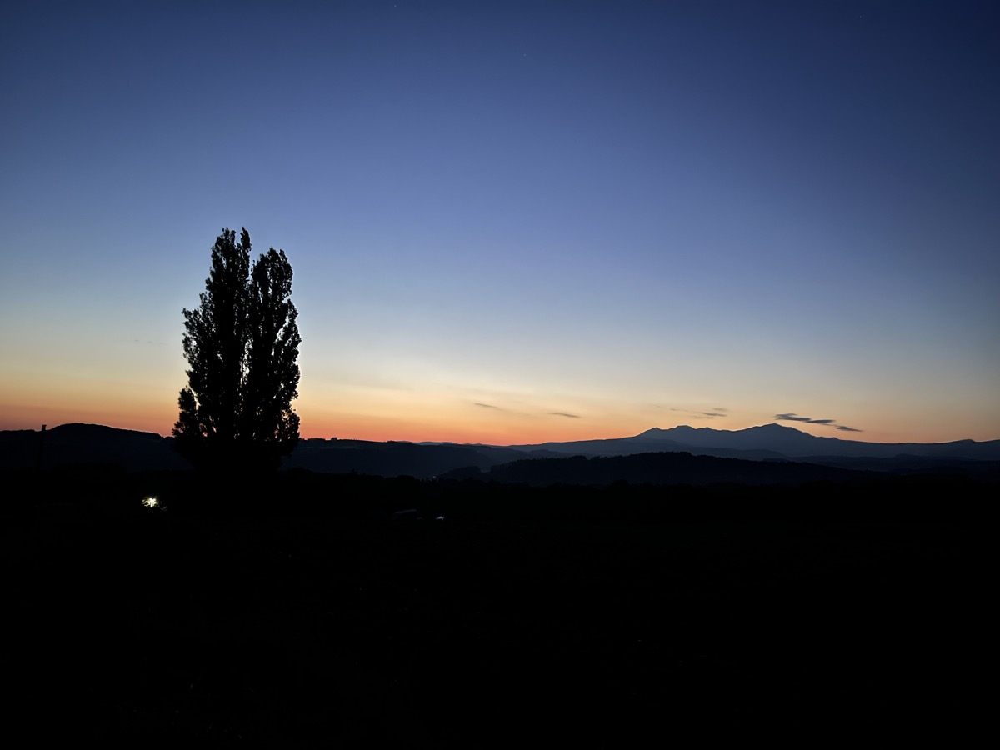
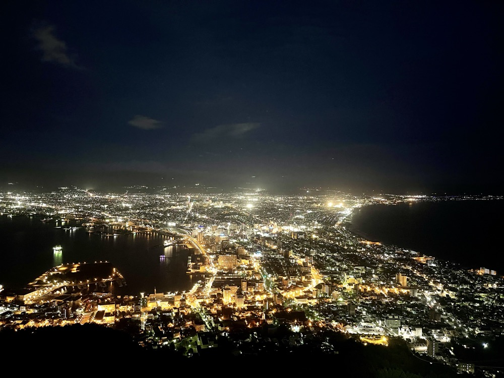
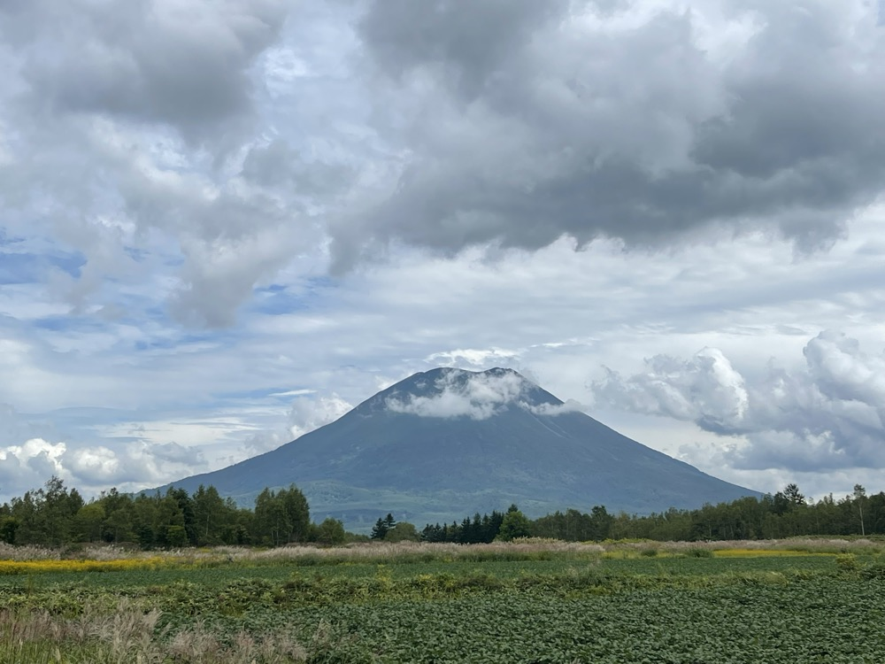
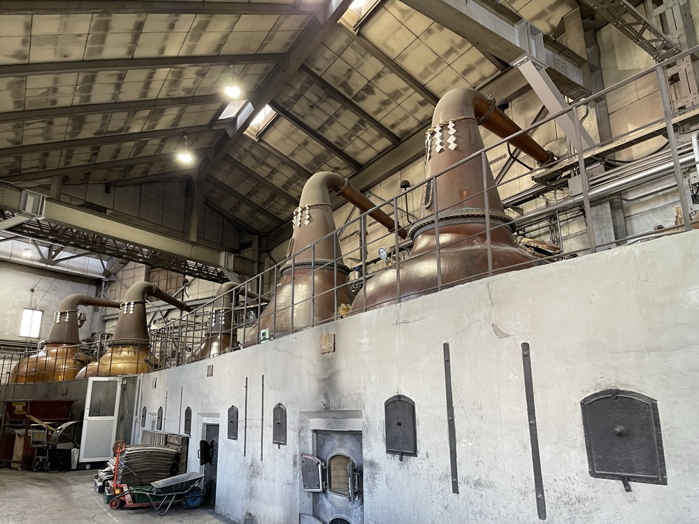
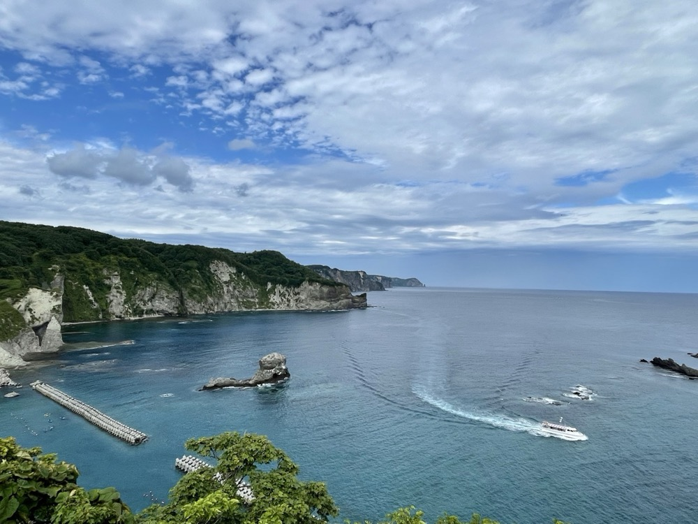
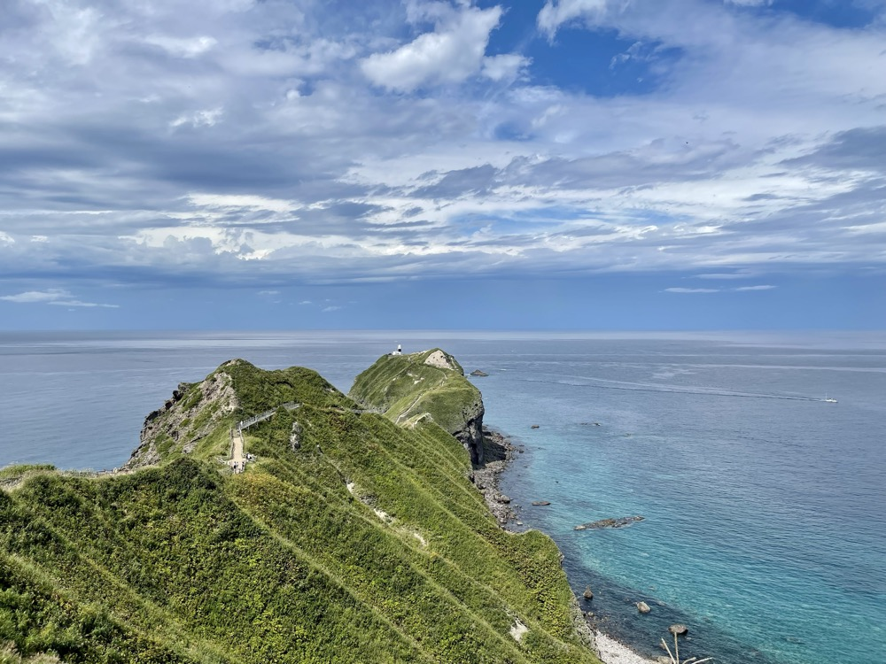
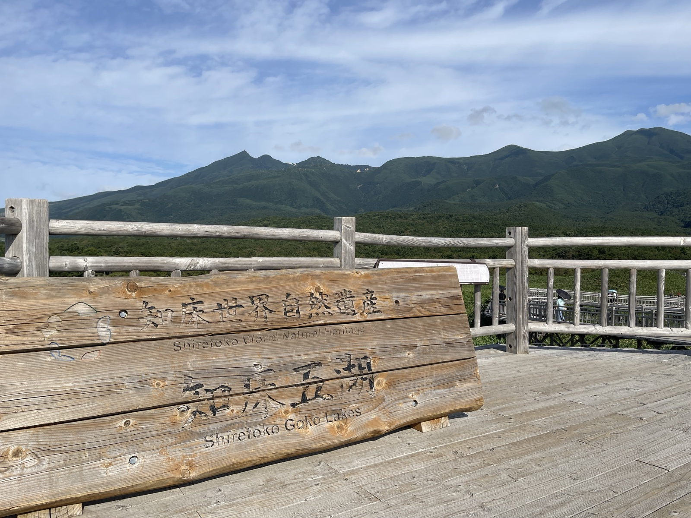
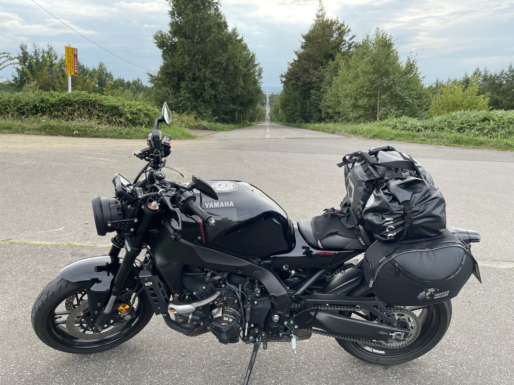

北海道へは、これまで3回行った。バイクで2回、車で1回。それぞれ目的地もスタイルも違うけれど、共通しているのは「広い」という感覚だ。本州にはない直線、本州にはない夕日、本州にはない静けさ。
このページでは、3回の旅のルート・宿泊地・印象に残ったスポットをまとめた。これから北海道に行く人が、ルート決めの参考にできるように。
北海道ルートマップ（3回ぶん）
3つの旅のルートを北海道の地図に重ねて表示している。線をクリック・タップするとその旅の詳細セクションに移動する。
3つの旅・概要
- ① SR400 ソロツーリング — エサヌカ線・道北中心
- ② 車でソロドライブ — 神威岬・函館・道南中心
- ③ XSR900 8日間ツーリング — 大洗発、道東〜道北一周
① SR400 ソロツーリング — 道北・エサヌカ線
SR400で北海道に渡ったときの記録。エサヌカ線で泣きそうになるほど感動した。何もない直線の道がどこまでも続く。紋別では夕方、オホーツクスカイタワーへ向かう山道でヒグマと鉢合わせした。
道北は国道232号線（オロロンライン）沿いに、留萌・小平・苫前・羽幌を北上。天塩から先は道道106号（稚内天塩線）に入って、サロベツ原野の中を走る電柱のない一本道（"日本一長い直線道路"区間）を抜け、日本海を左手に稚内まで走った。途中で寄り道したり戻ったりしながら、海岸線をひたすら走った。稚内からはノシャップ岬を経由して西海岸を回り、宗谷岬へ抜けた。
📍 Google マップでルートを開く（大洗→札幌→オロロンライン→稚内→ノシャップ岬→宗谷岬→エサヌカ線→紋別→美瑛→富良野→大洗）
各日の記録
宿泊先
- Day 1ホテルリブマックス札幌駅前店 / 札幌（前夜は大洗→苫小牧フェリー船中泊）
- Day 2温泉民宿 北乃宿 / 稚内・富士見
- Day 3紋別プリンスホテル / 紋別
- Day 4ホテルラブニール / 美瑛（道の駅 びえい「丘のくら」隣接）
- Day 5苫小牧→大洗フェリー船中泊（さんふらわあ）
主な経由地・観光スポット
- 札幌: 北海道庁旧本庁舎（赤レンガ庁舎）、ラーメン一粒庵
- 石狩: 道の駅「あいろーど厚田」
- オロロンライン: 風車群、オトンルイ風力発電所、海岸沿いの直線
- 稚内: 港北防波堤ドーム、稚内駅（日本最北端の線路）、ノシャップ岬（西海岸沿いに走って到達）
- 宗谷: 白い道、宗谷丘陵、宗谷岬（日本最北端の地）
- 猿払村: エサヌカ線
- 枝幸町: ウスタイベ千畳岩
- 紋別: カニの爪モニュメント、オホーツクスカイタワー、クマ牧場
- かみふらの: せるぶの丘
- 美瑛: 青い池、ケンとメリーの木、セブンスターの木、パッチワークの路、ジェットコースターの路
- 富良野: ファーム富田（ラベンダー畑）
旅のハイライト





② 車でソロドライブ — 道南・神威岬・函館
2022年8月25日〜28日、新幹線で函館に入り、そこからレンタカーで道南〜積丹半島を3泊4日で巡った。神威岬の青い海、五稜郭の星形、函館朝市の海鮮、函館山の夜景。バイクと違って荷物を気にせず動ける自由があった。
3日目の小樽→神威岬→函館は、行きは小樽から余市・美国・神威岬と積丹半島の東海岸を西進。神威岬からはそのまま国道229号線で積丹半島の西海岸を南下し、寿都まで日本海沿岸を走った。寿都からは内陸の国道5号線（黒松内→長万部→八雲）で函館へ戻った。海岸線と内陸が半々のロングドライブだった。
📍 Google マップでルートを開く（Day1夜：函館着・函館山夜景→Day2：羊蹄山・ニッカ余市・小樽→Day3：美国・神威岬→国道229号線で南下、寿都から国道5号で内陸経由→函館へ→Day4：函館朝市・五稜郭→新函館北斗発）
主な訪問地
- 函館: 函館山（夜景）、八幡坂、ラッキーピエロ、HAKODATE BEER、五稜郭、函館朝市、北海道第一歩の地碑
- ニセコ・倶知安: 羊蹄山（蝦夷富士）、毛無山展望所
- 余市: ニッカウヰスキー余市蒸留所、余市宇宙記念館「スペース童夢」（毛利衛宇宙飛行士の故郷）
- 小樽: 小樽駅、小樽運河、旧手宮線跡
- 積丹半島: 神威岬、美国の黄金岬、清寿司支店
各日の記録
宿泊先
- Day 1（8/25）おやど青空 / 函館市若松町22-4
- Day 2（8/26）Hostel 順風満帆（小樽商科大学の大学生が運営）/ 小樽市緑1-21-21
- Day 3（8/27）東横INN函館駅前朝市 / 函館市大手町22-7
- Day 4（8/28）新函館北斗 16:20発・新幹線で帰路
旅のハイライト






③ XSR900 8日間ツーリング — 大洗発、道東〜道北一周
大洗からさんふらわあで苫小牧へ渡り、帯広・釧路・根室・納沙布岬・知床・網走・稚内・旭川・美瑛を巡って苫小牧に戻る、8日間の周回ルート。XSR900の3気筒が北海道の道に合っていた。
📍 Google マップでルートを開く（大洗→苫小牧→帯広→道東一周→稚内→旭川→美瑛→苫小牧→大洗）
各日の記録
宿泊先
- Day 1大洗→苫小牧フェリー船中泊（さんふらわあ）
- Day 2Guest House モモ / 帯広市東10条南8
- Day 3ゲストハウス とまや / 根室
- Day 4ホテルロマン / 小清水町
- Day 5ホテルオホーツクパレス紋別 / 紋別
- Day 6ゲストハウス モシリパ（Guest House Moshiripa） / 稚内
- Day 7旭川トーヨーホテル / 旭川
- Day 8苫小牧フェリー
旅のハイライト





北海道ツーリングのコツ（3回行って分かったこと）
- フェリー — 大洗→苫小牧の「さんふらわあ」が定番。乗船時間は約19時間
- 季節 — 6〜9月がベスト。8月は最高気温20℃前後で快適
- 装備 — 寒暖差・雨・ヒグマ対策。→ 北海道ツーリング装備リストへ
- 燃費 — 道東はガソリンスタンド間隔が長い。早めに給油